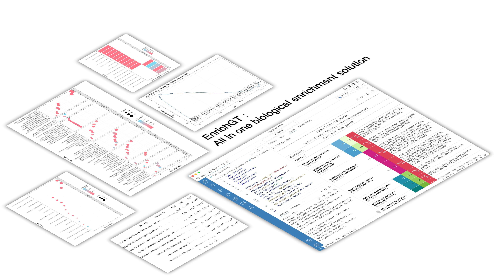

graph LR
M[genes]
N[genes with weights]
subgraph Enrichment Analysis
A[egt_enrichment_analysis]
B[egt_gsea_analysis]
end
subgraph Pathway Databases
D[database_* funcs]
end
subgraph Visualize results
P1[egt_plot_results]
P2[egt_plot_gsea]
end
subgraph egt_recluster_analysis
K1[Pretty table]
CC[cluster modules]
MG[gene modules]
end
subgraph Pathway Act. and TF infer
I[egt_infer]
end
M --> A
N --> B
D --> A
D --> B
A --> C[Enriched Result]
B --> C
C --> CC
C --> MG
C --> P1
CC --> K1
MG --> K1
CC --> P1
C --> P2
MG --> I
EnrichGT: all-in-one enrichment analysis
Intro

Highlights
| EnrichGT means enriching previously enriched results (\(E^2_{\text{enrich}}\)) into great tables and more … |
|---|
| Efficient C++-based functions for rapid enrichment analysis |
| Simple input format, empowering non-pro users |
| Re-clustering of enriched results provides clear and actionable insights |
| User-friendly HTML output that is easy to read and interpret |
| Do a series of things just in ONE package |
Aim and Scope
Please note that the primary goal of EnrichGT is to provide researchers in wet labs, who have been busy all day, with quick and insightful biological interpretations from dry lab data to support their experiments. Therefore, all computational methods employed are relatively straightforward and pragmatic. For example, C++ based ORA enrichment function, GSEA only using fgsea output without more analysis, use only vocabulary frequency matrix for re-enrichment instead of term’s similarity, and more… Its purpose is to offer a “quick overview”. After this initial overview, you can use more widely recognized tools to generate statistically rigorous results (not necessary though). However, don’t misunderstand—this does not mean that the statistical processes in EnrichGT are incorrect. I’ve made every effort to ensure their accuracy; they are just less refined. Additionally, the tool has been tested in most typical scenarios, but extreme cases cannot be entirely ruled out.
This package was developed under the inspiration of clusterProfiler (a wonderful and powerful package! I have learned a lot. Without it I won’t develop EnrichGT.), but none of EnrichGT’s internal functions rely on any clusterProfiler functions. Some database-loading code references clusterProfiler‘s implementation, but it has been extensively modified to provide lightweight experience. In other words, this is not a case of rebranding clusterProfiler under a different name. It’s a lightweight implementation designed to wet-labs. If you need a tool that handles every detail, please use clusterProfiler instead. Please see acknowledgment page for citing clusterProfiler.
Install EnrichGT
install.packages("pak")
pak::pkg_install("ZhimingYe/EnrichGT")The AnnotationDbi, fgsea, reactome.db and GO.db were from BioConductor and might be slow to install. If you can’t install, please re-check your web connections or update your R and BioConductor, or use Posit Package Manager to install when using old R.
Meet EnrichGT
Please see articles on the left! Especially the basic workflow introduction.
Tip
See package function page for further detail params of functions. (For example, how to use a function)
You can use ? function to get further help when installed.
?egt_recluster_analysisIn most examples of this document, we use a result table of DEG analysis DEG.csv. The gene symbols of DEG.csv is on the first column without column name. In default read_csv() convert the unamed column name to ...1. So DEGtable$...1 refers to gene symbols.
Overview
The functions from EnrichGT are starting with “egt_” or “database_”.